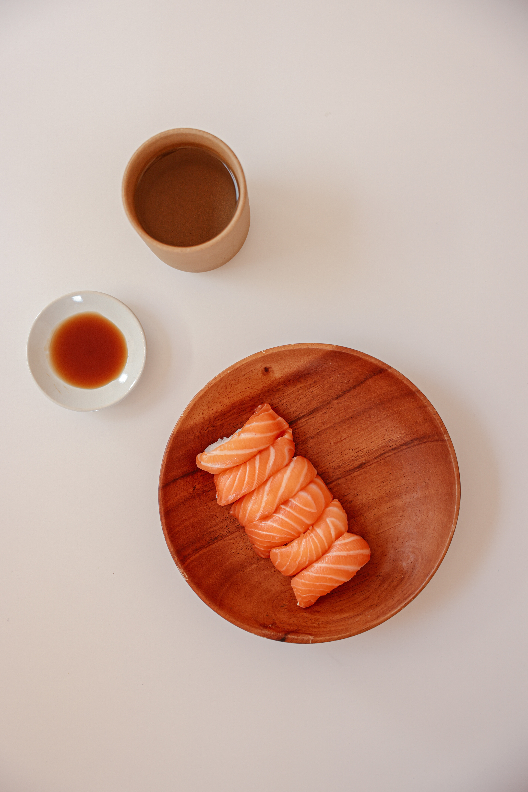

Nigiri Sushi

Description
Seasoned rice is wrapped with fresh raw fish, cooked shrimp, or egg omelet for trafitional Japanese nigiri sushi.
Ingredients
- 4 cups water
- 2 cups uncooked rice
- 1/2 cup seasoned rice vinegar
- 1 teaspoon white sugar, or as needed
- 1 teaspoon salt, or as needed
- 1/4 pound hamachi (yellowtail)
- 1/4 pound maguro (tuna)
- 1/4 pound cooked Ebi (shripm), shelled and butterflied
- 6 eggs
- 1/2 teaspoon white sugar
- 1/8 teaspoon salt
- 1 teaspoon wasabi paste (optional)
- 1 sheet nori, cut into 1-inch strips
Steps
- Bring water and rice to a boil in a saucepan over high heat. Reduce heat to medium-low, cover, and simmer until
the rice is tender and the liquid has been absorbed, 20 to 25 minutes. Transfer rice to a bowl anf cut in rice
vinegar using a rice paddle or wooden spoon. Season with 1 teaspoon sugar and 1 teaspoon saltm or to taste.
Allow to cool to room temperature, about 30 minutes.
-
Prepare fish for wrapping by slicing against the grain into thin pieces about 2 inches long and 1 inch wide.
Refrigerate until ready to use.
-
Whisk eggs, 1/2 teaspoon sugar, and 1/4 teaspoon salt together in a bowl. Pour about 1/4 of the mixture in a thin
layer in a large greased skillet over medium heat. Cook without stirring until cooked through, about 2 to 3 minutes.
Roll into a log and set in one side of the pan. Repeat with 1/4 of the egg mixture, rolling each log into a new log,
to create one large log. Slice omelet on the diagonal into pieces about 1/2-inch thick.
-
Place a piece of fish or shrimp in your hand and smear it lightly with wasabi paste if desired.
Grab 1 to 2 tablespoons of rice and roll it into a small nugget in your hand. Place the rice ball on
top of the fish or shrimp, squeezing gently to make it adhere. Set aside while you assemble the remaining
pieces of fish and shrimp.
-
Take a slice of egg omelet in your hand, grab 1 to 2 tablespoons of rice, and roll it into a small nugget
in your hand. Place the rice ball on top of the egg, squeezing gently to make it adhere.
-
Wrap a strip of nori around each package; moisten one end of the nori strip and seal to join.